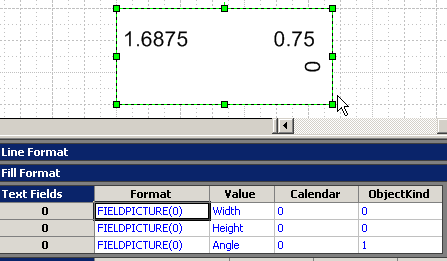

|
Форум visio.getbb.ru |
О форумах
Библиотека | Частые вопросы | Литература | Склад материалов Visio Navigator | Blog | Полезные ссылки | О сайте История Visio | Продукты Visio |
| Для русскоязычных пользователей Visio. Начинающих и профессионалов. Где взять, как сделать, что купить и т.д. |
Вставка полей
Шейпы часто содержат текст. В простейшем случае он сохранен в шейпе в виде строки, так сказать, константа. Но помимо этого существует механизм для отображения данных в виде текста. Это так называемые поля. Поля действуют аналогично переменным - если изменяются данные, то тут же автоматически изменяется и текст шейпа.
Существует специальное диалоговое окно для вставки полей, открывающеся через меню Insert / Field, и предлагающее для вставки наиболее распространенные типы (категории) данных:
Shape Data
Date/Time
Document Info
Page Info
Geometry
Object Info
User-defined Cells
Custom Formula
Потом категории могут быть раскрыты до имен полей. Причем перечень полей зависит от шейпа. Например, если у шейпа нет секции Shape Data, то и категория Shape Data будет пустой.
Помимо категорий, которые используются как заготовки, существует еще и Custom Formula, позволяющая использовать в качестве источника данных любую ячейку шейп-листа этого же шейпа, другого шейпа, комбинацию нескольких источников и т.д. Лишь бы итоговая формула подчинялась правилам работы с формулами шейп-листа.
Находясь в режиме редактирования текста, можно последовательно вставить в шейп несколько полей. Используя символы табуляции и перевода строки, поля можно разнести по разным сторонам шейпа, разместить их в несколько строк и даже повернуть отдельные поля. Вот на этой картинке показан один шейп, отражающий три поля категории Geometry.
Нужно помнить, что при использовании полей появляется некоторая специфика форматирования текста шейпов или программной работы с текстом таких шейпов. Например, нельзя половину поля выделить жирным шрифтом, только все поле целиком. Или при программном чтении текст уже не удается прочитать как Shape.Text, а только как Shape.Characters.Text.
Перечень литературы
06.12.2019
17.10.2019
06.06.2018
17.04.2014
11.07.2012
01.01.2007
Ответы на вопросы
Несколько Text Fields для фигуры в группе
Часто нужно добавить к фигуре несколько текстовых полей. Так вот если фигура отдельно - проблемы нет. добавил поле. потом двойным кликом открыл текст на редактирование - добавил еще поле. все по справке. а вот если фигура состоит в группе? Текст тогда на редактирование не открывается - двойной клик переставляет выделение с фигуры на группу. как добавить несколько полей в этом случае ? можно конечно создать поля заранее и внести фигуру в группу, но это несколько коряво имхо.
Группу можно открыть на редактирование (через меню Edit). Она открывается и ведет себя, как отдельный документ.
ок. а если надпись принадлежит шейпу-группе который тоже входит в группу? осн. то можно открыть - а вот дальше? Двойной клик управляет выделением, открывать группу на редактирование бесполезно... как до текста добратся ?
В общем-то, двойной клик - это для ленивых... А основной способ - это инструмент Text Tool. (Такой с буковкой "А"). Селектируйте группу и щелкайте по нему.
то что надо, спасибо
Текстовые поля
Подскажите, как вставить несколько текстовых полей в одну фигуру Уточняю: в ShapeSheet фигур есть секция Поля Текста (ТехтFields). У некоторых Master из стандартных Stencils в этой секции может быть несколько строк, т.е. несколько полей. Я могу вставить в любую фигуру ОДНО поле любой категории, могу изменить это поле через меню или через ShapeSheet, но не могу добавить еще одно, например, добавляя строки в секцию, как это можно сделать в других секциях типа Геометрии или Connection Points. Так конкретнее?
Вставка таких текстовых полей осуществляется так: 1) Выделить фигуру. 2) Нажать F2 (открываем текстовый блок для редактирования) 3) Нажать правой кнопкой мыши. 4) Выбрать Вставка поля(Insert Field) Далее откроется окно выбора, откуда брать данные, которые буду отображаться в этом поле. Соответственно повтор действий даст 2 текстовых поля в текстовом блоке...
Значение текстового поля
К примеру есть два текстовых поля Sheet.1 и Sheet.2, как записать Costum Formula для Sheet.2 что его текст = тексту Sheet.1?
=Sheet.2!Fields.Value где sheet.2 - имя шейпа в шейплисте Sheet.2 должна быть секция Text Fields Если текстовых полей несколько, то номер строки указывается в квадратных скобках. Например, =Sheet.2!Fields.Value[3] - ссылка на третье поле.
Как программно вставить поле в Text Fields?
Как программно реализовать, то что мы получаем при выполнении операции Insert->Field? Вот такой код:
visObj.ActivePage.Shapes(i).AddSection (visSectionTextField) v = visObj.ActivePage.Shapes(i).AddRow(visSectionTextField, visRowField, 0) visObj.ActivePage.Shapes(i).Shapes(i1).CellsSRC(visSectionTextField, v, visFieldFormat).Formula = "FieldPicture(37)" visObj.ActivePage.Shapes(i).Shapes(i1).CellsSRC(visSectionTextField, v, visFieldValue).Formula = "ThePage!Prop.Row_1"
работает, добавляется секция и строка, и данные в строку прописываются, только в шейпе текст который находится в "ThePage!Prop.Row_1" не отражается...
Через Characters. Примерно так:
Dim vsoChar As Visio.Characters Set vsoChar = MyShape.Characters vsoChar.Begin = 0 vsoChar.End = 0 vsoChar.AddCustomFieldU "sheet.1!User.1", visFmtNumGenNoUnits